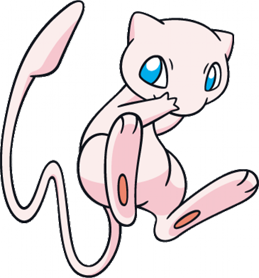
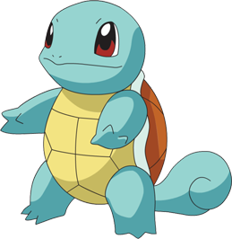
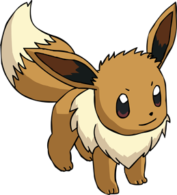
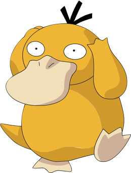

-
Pikachu
HP 500

Descrição
Pikachu é um Pokémon de roedor pequeno e gordinho. É coberto de pele amarela com duas listras marrons horizontais nas costas. Tem uma boca pequena, orelhas longas e pontudas com pontas pretas e olhos castanhos. Cada bochecha é um círculo vermelho que contém uma bolsa para armazenamento de eletricidade. Tem antebraços curtos com cinco dedos em cada pata, e seus pés têm cada um três dedos. Na base de sua cauda em forma de raio há um pedaço de pele marrom. Uma fêmea terá um entalhe em forma de V no final de sua cauda, que se parece com o topo de um coração. É classificado como quadrúpede, mas é conhecido por ficar em pé e andar sobre suas patas traseiras.
-
Charizard
HP 800

Descrição
Charizard é um Pokémon dracônico e bípede. É principalmente laranja com partes creme de baixo do peito para a ponta de sua cauda. Tem um pescoço longo, pequenos olhos azuis, narinas ligeiramente levantadas, e duas estruturas semelhantes a chifres salientes da parte de trás de sua cabeça retangular. Há duas presas visíveis na mandíbula superior quando sua boca está fechada. Duas grandes asas com partes inferiores azul-esverdeadas brotam de suas costas, e um apêndice parecido com chifre saem do topo da terceira articulação de cada asa. Um único dedo de asa é visível através do centro de cada membrana de asa. Os braços de Charizard são curtos e magros comparados com sua barriga robusta, e cada membro tem três garras brancas. Tem pernas estonteadas com solas cor de creme em cada um de seus pés plantilados. A ponta de sua cauda longa e afunilada queima com uma chama considerável.
-
Mewtwo
HP 1200

Descrição
Mewtwo é um Pokémon artificial. É um Pokémon bípede e humanoide com algumas características felinas. É principalmente cinza com uma cauda longa e roxa. Em cima de sua cabeça estão dois chifres curtos e contundentes, e tem olhos roxos. Um tubo se estende da parte de trás de seu crânio até o topo de sua coluna, contornando seu pescoço. Tem um peito e ombros definidos, que se assemelham a um peitoral. Os três dígitos em cada mão e pé têm pontas esféricas. Sua cauda é grossa na base, mas fina antes de terminar em uma pequena lâmpada.
-
Mew
HP 1200
Descrição
Mew é um Pokémon rosa, bípede com características de mamíferos. Ele tem um focinho arredondado, largo; orelhas triangulares; e grandes olhos azuis. Tem braços curtos com patas de três dedos e patas traseiras grandes com marcas ovais nas solas. Sua cauda é longa e fina com uma ponta vazia. Sua pele é tão fina e fina, que só pode ser vista sob um microscópio. Diz-se que Mew tem o DNA de cada Pokémon contido dentro de seu corpo, permitindo que Mew aprenda e use qualquer ataque.
-
Bulbasaur
HP 850
Descrição
Bulbasaur é um Pokémon pequeno e quadrúpede anfíbio que tem pele azul-esverdeada com manchas mais escuras. Tem olhos vermelhos com pupilas brancas, estruturas pontiagudas, parecidas com orelhas em cima da cabeça, e um focinho curto e contundente com uma boca larga. Um par de dentes pequenos e pontiagudos são visíveis na mandíbula superior quando sua boca está aberta. Cada uma de suas pernas grossas termina com três garras afiadas. Nas costas de Bulbasaur está uma lâmpada de planta verde, que é cultivada a partir de uma semente plantada lá ao nascer. A lâmpada também esconde duas videiras esbeltas, semelhantes a tentáculos, e fornece-lhe energia através da fotossíntese, bem como das sementes ricas em nutrientes contidas dentro.
-
Squirtle
HP 800
Descrição
Squirtle é um pequeno Pokémon réptil que se assemelha a uma tartaruga azul-clara. Embora normalmente ande em suas duas pernas curtas, ele é quadrúpede. Tem olhos grandes, arroxeados ou avermelhados e um lábio superior ligeiramente fisgado. Cada uma de suas mãos e pés têm três dígitos pontiagudas. O fim de sua cauda longa cachos para dentro. Seu corpo é envolto por uma concha dura que se forma e endurece após o nascimento. Esta concha é marrom na parte superior, amarelo pálido na parte inferior, e tem um cume branco espesso entre as duas metades.
-
Eevee
HP 600
Descrição
Eevee é um Pokémon pequeno, mamífero, quadrúpede com pele principalmente marrom. A ponta de sua cauda espessa e sua grande coleira peluda são cor de creme. Tem pernas curtas e esbeltas com três dedos pequenos e uma pata rosa em cada pé. Eevee tem olhos castanhos, orelhas longas com interiores castanhos escuros, e um pequeno nariz preto.
-
Psyduck
HP 900
Descrição
Psyduck é um Pokémon amarelo que se assemelha a um pato ou um ornitorrinco bípede. Em cima de sua cabeça estão três fios grossos de cabelo preto, e tem um bico largo, cor de creme liso. Os olhos de Psyduck parecem vagos e têm pupilas minúsculas. Suas pernas e cauda são stubby, e tem pés de teia cor de creme. Há três garras em cada uma de suas mãos.